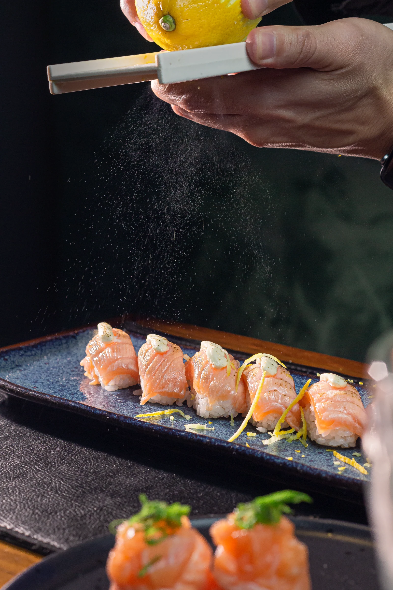

Hako
2023–2024
O cuidado do preparo, a textura dos ingredientes e a experiência à mesa transformados em imagem.
- Projeto
- Fotografia e audiovisual
- Cliente
- Hako
- Ano
- 2023–2024
- Categorias
- Fotografia
Audiovisual - Atuação
- Produção fotográfica e audiovisual
Despertar o apetite pelo olhar
A produção para o Hako valoriza os detalhes que fazem parte da experiência gastronômica: cor, textura, composição e finalização dos pratos. A fotografia aproxima o público do produto e oferece à marca um repertório visual para apresentar sua cozinha com consistência.
Do detalhe ao movimento
Os vídeos acrescentam ritmo e ação à narrativa. Gestos de preparo e enquadramentos próximos revelam o cuidado por trás de cada prato, criando conteúdos que levam a atmosfera da gastronomia para a comunicação digital.